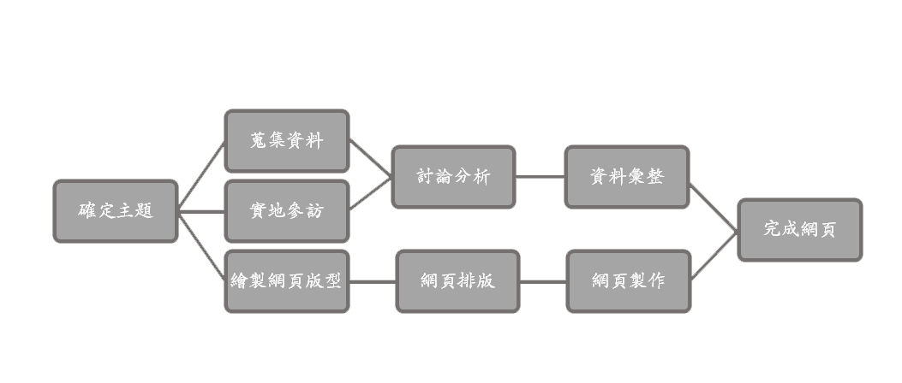

研究動機
由於現代人認為養育兒女過於麻煩，因此大多數人改養育毛小孩們，但是有些人卻沒有想到養寵物需要付出的心力和背後的責任，凡新鮮感過後，就隨意將寵物棄養。因為人們隨意棄養，流浪貓狗的數量日漸增加，在街頭上四處徘徊、飢餓，甚至會吠叫、咬人，造成社會問題。
因此我們透過這個機會去深入了解。 所以我們來到新北市中和的動物之家，那邊是屬於新北市政府轄下的機關，近年來已成為流浪貓狗的避風港。 動物之家裡的貓狗大部分都是從街上捕捉回來的，所以當那些被遺棄的貓狗進入動物之家以後，會給予牠們最安全和最好的照顧，像是幫牠們注射疫苗、體檢、除蟲、植入晶片，並進行絕育手術，完成以上程序，這些貓狗就可等待被收養。
研究目的
了解目前流浪動物的問題，以及如何去幫助牠們，讓牠們能再次擁有好的歸宿。 也增加人們對於動保議題的關注和知識，讓主人可以更好的對待動物，讓寵物以及主人可以有更好的陪伴時光。
研究方法
1.實地參觀：
到流浪動物之家進行參訪
2.問卷：
自製與主題相關的問卷，例如想養寵物會從領養還是其他的方式、是否了解或贊同對流浪動物的政策等。
研究流程
